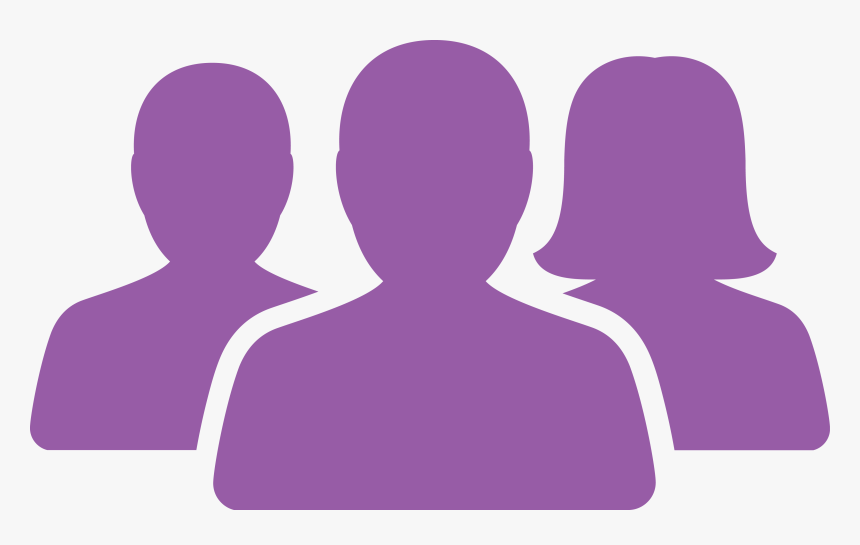

Card title
This is where I'll explain the iterations we made.
Last updated 3 mins ago
An app that curates personalized recipes to promote healthy and easy living.
The App provides ideas and inspiration through the community atmosphere within the App. Users are able to share their fitness progress and personal recipes encouraging participation, commitment, self discipline, and creativity around the monotonous task of dieting and weight-loss. By providing detailed recipes according to a user’s information, preferences and constraints, they are provided with a multitude of options that will satisfy their nutritional needs and help them further with their weight goals.
As one of three designers, we all took a hands on approach to the research process and design layout. Based off of our interviews, we focused on the user’s goals and paint points. Taking those insights into consideration, we created a user persona that became a reference of how we wanted our prototpye to look and work. After drawing up some wireframes, my group and I came together to combine our ideas into one cohesive wireframe. Once built, I added clickable features onto my section of the prototype to make it interactive.
The process for this project is as follows:
ResearchUser goals/pain points
Research plan
Competitor Analysis
AnalysisProblem Statement
IdeationUser Persona
Storyboard
DesignLow-Fidelity wireframes
High-fidelity wireframes
Interactive Prototype
FeedbackField Testing
IterationIterations
Detail Testing
Finding the right diet and sticking to it is tough, especially without any guidance from a professional dietitian. Without prior knowledge on healthy eating, people may find it difficult to achieve their fitness goals or to reach their ideal weight.
A meal planning App that doubles as a recipe bank, providing hundreds and thousands of recipes per the user’s dietary preferences, to guide and inspire users to reach whatever their weight goals may be.
We first conducted in-person and Zoom interviews to gather information specific to dieting culture and eating habits. In addition, we created and distributed a Google Survey with similar questions to supplement our interviews.
As a user researcher, I want to understand millennials’s views and habits on fitness and dieting.
As a user researcher, I want to understand millennials’s views and habits on fitness and dieting.
Main Takeaways
We set out to compare our app idea with companies that had a similar message to ours. By mapping out the strengths and weaknesses of these other companies, we gathered new features to incorporate for ReciFit, as well as ones that were not critical at this time.
Our proto-persona Chloe is worried about her body image, which causes her to miss out on delicious and nutritious food. Our solution is to provide a plethora of recipes that satisfy her nutritional needs without sacrificing the enjoyment of eating. Not only so, our App also helps build healthy eating habits and cultivates consistency.
“We believe that providing delicious, tailor made recipes designed to achieve one’s weight goals for users struggling with their diet will achieve a healthier mental and physical state."
This is where I'll explain the iterations we made.
Last updated 3 mins ago